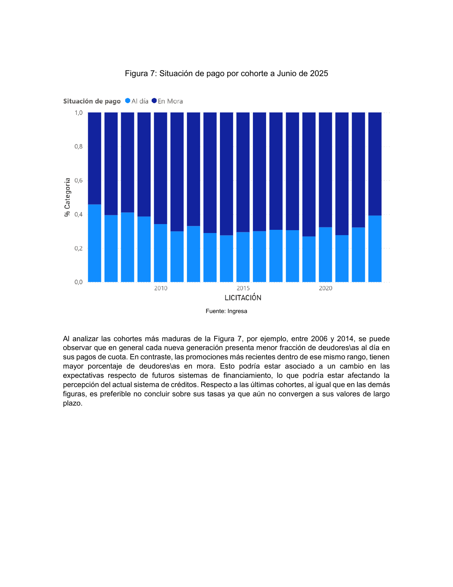
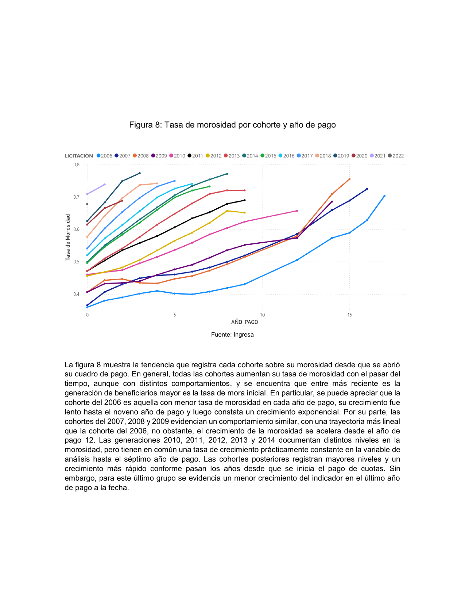

Movimiento de Deudores CAE · evidencia pública
No hay pago justo ante una deuda injusta.
Una radiografía pública de una arquitectura financiera con consecuencias masivas. La deuda CAE no es un problema individual: es deuda persistente, morosidad extendida y recursos públicos movilizados para sostenerla.
La actualidad no es una sola fecha. Cada módulo conserva el último corte comparable disponible.
Deuda y territorioDiciembre de 2023Contexto socioeconómicoCASEN 2024 regional; SAE 2022 comunalPerfil y cohortes CAEJunio de 2025Cobranza TGRComunicaciones al 11 de junio de 2026
¿Qué significan estos indicadores?
- Saldo total de deuda
- Capital adeudado por quienes se encuentran en etapa de pago, expresado en pesos de diciembre de 2023.
- Persona morosa
- Deudor o deudora con una o más cuotas impagas o con garantía ejecutada, según las categorías publicadas por Comisión Ingresa.
- Tasa de morosidad
- Personas morosas divididas por el total de personas en etapa de pago.
- Garantía ejecutada
- Caso en que el banco cobró la garantía al Estado o a la institución de educación superior por incumplimiento del crédito.
01 · Escala
La morosidad se volvió estructural
La serie publicada por Fundación SOL permite comparar desertores, egresados y total. La brecha entre trayectorias educativas es persistente, pero la morosidad no se limita a quienes desertaron.
Definiciones de esta sección
- Desertor/a
- Persona que dejó sus estudios sin obtener el título.
- Egresado/a
- Persona que concluyó su trayectoria educativa y se encuentra en etapa de pago.
- Morosidad
- Una o más cuotas impagas o garantía ejecutada, según la clasificación publicada; la tasa se calcula sobre quienes están en etapa de pago.
Lectura política
Cuando cientos de miles incumplen bajo reglas comunes, la explicación no cabe en la conducta individual: hay que examinar el diseño del sistema.
Fuente: Fundación SOL, CAE 2024, Cuadro 13, p. 35; datos de Comisión Ingresa.
02 · Actualización
El perfil de pago llega hasta junio de 2025
Comisión Ingresa publicó una caracterización más reciente de quienes están en etapa de pago. Este módulo actualiza el panorama nacional, pero no reemplaza el detalle comunal de 2023.
Cómo leer la actualización 2025
- Cuadro de pago
- Registro de un crédito que entró en etapa de cobro. La minuta no documenta si cada cuadro equivale siempre a una persona única.
- Al día
- Cuadro sin cuotas impagas y con saldo vigente al corte.
- Deuda saldada
- Cuadro cuyo saldo ya fue completamente pagado.
- Mora amplia
- Suma de 1–2 cuotas impagas, 3 o más cuotas en mora y garantía ejecutada.
- Garantía ejecutada
- Crédito cuyo incumplimiento activó el cobro de la garantía al Estado o a la institución de educación superior.
- Cohorte
- Generación agrupada por año de licitación del CAE. Sus años transcurridos en pago varían según la duración de los estudios y el inicio efectivo del cobro.
Composición completa de la situación de pago
Cada barra suma 100%; las diferencias de una centésima responden al redondeo de la fuente.
Fuente: Comisión Ingresa, Perfil de Egresados y Desertores, Figuras 9–10, pp. 6–7. Corte: junio de 2025.
Qué agrega el análisis por cohortes
Una cohorte agrupa beneficiarios/as por año de licitación. Compararla exige distinguir corte común, años transcurridos en pago y madurez de la observación.


Confundir ambos ejes produce conclusiones engañosas sobre cohortes con distinta madurez.
No deben compararse sus últimos puntos con generaciones que acumulan muchos más años en etapa de pago.
Lectura que sí sostiene la fuente
La mora no aparece como un evento puntual: se acumula durante la vida del crédito y afecta a generaciones sucesivas. La minuta no demuestra por sí sola por qué ocurre ni permite atribuir el cambio a una política específica.
Fuente: Comisión Ingresa, Análisis exploratorio del perfil por cohortes, Figuras 7–8, pp. 7–8. Publicado en enero de 2026; datos a junio de 2025. Imágenes reproducidas sin alterar la gráfica original.
Trayectoria educativa y quintil socioeconómico
Ingresa publica conjuntamente los quintiles 1 y 2. Barras: distribución dentro de cada trayectoria; línea: tasa de deserción del quintil.
Fuente: Comisión Ingresa, Perfil de Egresados y Desertores, Figuras 1–3, pp. 3–4. Corte: junio de 2025.
¿La condonación universal beneficia principalmente a los grupos de mayores ingresos?
La composición conjunta se deriva ponderando la distribución de cada trayectoria por sus cuadros de pago. Describe quintil de origen informado por Ingresa, no ingreso actual ni saldo adeudado.
de los cuadros se concentra en los quintiles 1 y 2 agrupados.
de los cuadros corresponde al quintil 5.
La publicación no entrega saldo por quintil, ingreso actual, patrimonio ni beneficio monetario individual. Por eso no permite afirmar cuánto del monto condonado recibiría cada grupo.
La universalidad no exige sostener que todas las personas deudoras son pobres. Propone reparar una política general de endeudamiento sin reproducir filtros de merecimiento; esa es una posición normativa, no una deducción automática del gráfico.
Fuente: cálculo derivado de Comisión Ingresa, Perfil de Egresados y Desertores 2025. Unidad: cuadros de pago; puede no equivaler a personas únicas.
03 · Contexto 2024
La actualización socioeconómica cambia el contexto, no el corte de la deuda
Se enlazan 16 regiones con pobreza e ingreso autónomo promedio CASEN 2024 y morosidad CAE 2023. El cruce es territorial y entre años distintos.
Definiciones y comparabilidad
- Pobreza CASEN 2024
- Porcentaje de personas en pobreza por ingresos según la nueva metodología 2024. No es directamente intercambiable con la estimación comunal SAE 2022.
- Ingreso autónomo promedio
- Promedio regional del ingreso del hogar antes de subsidios monetarios, expresado en pesos de noviembre de 2024.
- Cruce regional
- Relaciona contextos territoriales agregados; no identifica el ingreso ni la pobreza de cada persona deudora.
Pobreza 2024 y morosidad CAE 2023
El tamaño representa la cantidad de personas morosas. Pearson no ponderado; cada región cuenta igual.
Fuentes: CASEN 2024, Resultados Regionales; Fundación SOL, CAE 2024, Cuadro 15, p. 37.
Ingreso autónomo promedio por región
Pesos de noviembre de 2024.
Fuente: CASEN 2024, Resultados Regionales.
04 · Territorio
Una crisis nacional con intensidades locales
Selecciona una región y una métrica. El mapa ubica consistentemente 339 de 341 registros comunales; los restantes permanecen en la tabla.
Definiciones territoriales y cobertura
- Total deudores/as
- Total informado para la comuna en la publicación. En 45 filas la fuente no reconcilia exactamente este valor con la suma de personas al día y morosas.
- Al día
- Personas sin cuotas morosas al corte de diciembre de 2023.
- Morosos/as
- Personas con cuotas impagas al mismo corte.
- Ingreso autónomo promedio del hogar
- Promedio del ingreso del hogar antes de transferencias monetarias del Estado. Disponible para 20 comunas seleccionadas del Gran Santiago.
- Ingreso autónomo mediano del hogar
- Valor que divide a los hogares en dos mitades: 50% recibe menos y 50% más. Disponible para las mismas 20 comunas.
- Pobreza por ingresos
- Porcentaje de personas bajo la línea oficial de pobreza, según estimaciones comunales CASEN 2022 SAE.
Intensidad territorial
El color representa tasas o contexto socioeconómico; los conteos permanecen en las tarjetas, la tabla y el detalle emergente para evitar sesgo por superficie.
Fuente: Fundación SOL, CAE 2024, pp. 53–75; geometrías INE/Esri Censo 2017.
Pobreza territorial y morosidad
Cruce ecológico comunal: describe territorios, no la situación socioeconómica individual de cada deudor.
Fuentes: Fundación SOL, CAE 2024; pobreza comunal CASEN 2022 SAE. n visible en la interpretación.
Tipología territorial: volumen e intensidad
Cuadrantes relativos al filtro seleccionado. El tamaño representa personas en etapa de pago.
Fuente: Fundación SOL, CAE 2024. Clasificación derivada con medianas del filtro; no define elegibilidad individual.
Detalle comunal
| Comuna | Región | Total deudores/as | Al día | Morosos/as | Tasa de morosidad | Ingreso promedio | Ingreso mediano | Pobreza |
|---|
Ingresos comunales: disponibles para 20 comunas seleccionadas del Gran Santiago; “s/d” indica que la publicación no entrega ese dato. Se conservan los valores originales: 45 filas no cumplen exactamente al día + morosos = total.
05 · Instituciones
La deuda también tiene una geografía institucional
La concentración por institución permite observar dónde se acumulan deudores morosos y qué recursos CAE fueron recibidos.
Definiciones institucionales
- Recursos CAE recibidos
- Valor de los créditos CAE asociados a estudiantes nuevos y renovantes de cada institución, expresado en millones de pesos de diciembre de 2023.
- Tasa de morosidad institucional
- Proporción de deudores/as morosos entre quienes estudiaron en la institución y están en etapa de pago.
- Tipo de institución
- Universidad, instituto profesional, centro de formación técnica u otra categoría publicada.
Las 10 instituciones con más morosos/as concentran—
Participación sobre 539.613 personas morosas distribuidas en 109 instituciones.
Instituciones con más morosos/as
Fuente: Fundación SOL, CAE 2024, Cuadros 24–26, pp. 50–52; datos de Comisión Ingresa.
Recursos recibidos y morosidad
El tamaño representa el número de personas morosas. Solo se muestran instituciones con cruce disponible.
Fuente: Fundación SOL, CAE 2024, Cuadros 24–26. Cobertura del cruce: 95,5%.
Concentración acumulada de personas morosas
Cada barra representa una institución ordenada de mayor a menor; la línea muestra la participación acumulada.
Fuente: Fundación SOL, CAE 2024, Cuadros 24–26. Cálculo derivado del extracto institucional.
06 · Estado, banca y gratuidad
La deuda expresa una forma de financiar la educación superior
El CAE convirtió el acceso a la educación en deuda individual y sostuvo la intermediación financiera con recursos públicos. La comparación con gratuidad permite discutir qué financia el Estado y mediante qué mecanismo.
Definiciones de Estado y banca
- Créditos cursados
- Créditos CAE otorgados originalmente por las instituciones financieras.
- Monto recomprado
- Valor de créditos que el Fisco debió comprar a los bancos cuando las licitaciones no fueron cubiertas íntegramente por el sistema financiero.
- Recarga
- Pago adicional sobre el valor del crédito recomprado, establecido en la licitación como compensación a la institución financiera.
- Valor pagado incluida recarga
- Suma del monto recomprado y la recarga pagada con recursos fiscales.
- Tasa de recompra
- Monto recomprado dividido por el monto total de créditos cursados por el banco.
Stock no es flujo: el saldo vigente es una fotografía al cierre de 2023; los otros tres indicadores acumulan movimientos entre 2006 y 2023.
Saldo vigente: comparación disponible 2022–2023
Dos cortes nominales publicados por Fundación SOL. No se presenta como una serie larga ni ajustada por inflación.
Fuente: Fundación SOL, estudios CAE 2023 y 2024. Dos cortes no ajustados por inflación.
Los 3 bancos con mayor recompra concentran—
Participación del monto recomprado acumulado entre 2006 y 2023.
Financiamiento en 2023: banca CAE y gratuidad
Comparación de magnitudes públicas del mismo año. El pago CAE es un flujo publicado; gratuidad corresponde al presupuesto autorizado. No se presentan como ejecuciones contables equivalentes.
Fuentes: Fundación SOL, CAE 2024, Cuadro 3; Ley de Presupuestos 2023, Partida 09, Capítulo 90, Programa 03, asignaciones 198 y 199.
Créditos cursados y recomprados por año
Fuente: Fundación SOL, CAE 2024, Cuadro 3, p. 24. Pesos de diciembre de 2023.
Recompras y recarga por banco
Fuente: Fundación SOL, CAE 2024, Cuadro 4, p. 24.
07 · Ofensiva ejecutiva 2026
El embargo funciona como presión material para convenir el pago
El Ejecutivo activó cobros, retenciones y embargos sobre personas deudoras. Las propias cifras oficiales muestran muchos más convenios que embargos ejecutados, mientras permanecen ocultos los montos efectivamente recuperados por cada vía.
Universos distintos
Las cifras TGR 2026 no reemplazan ni actualizan automáticamente los indicadores CAE 2023 y 2025.
Definiciones de la ofensiva de cobro
- Acreencia fiscal comunicada
- Monto que TGR atribuye a créditos cubiertos por el Fisco y posteriormente cobrados. No equivale al saldo bruto nacional del CAE.
- Persona embargada
- Persona respecto de la cual TGR informa haber ejecutado una medida. No identifica cuántos bienes o actuaciones contiene cada expediente.
- Convenio
- Acuerdo de pago suscrito bajo la amenaza o ejecución del cobro. No significa necesariamente que la deuda haya sido pagada por completo.
- Regularización
- Término institucional que reúne pagos o acuerdos, sin publicar siempre su estado posterior.
- Ingreso de referencia
- Renta utilizada para segmentar acciones, informada a partir del Año Tributario 2025 y antecedentes acreditados.
- Presión coercitiva
- Inferencia descriptiva basada en la secuencia de notificación, embargo y convenio. No equivale a una declaración oficial de intención.
Cronología de la ofensiva de cobro
Cada hito enlaza la comunicación oficial utilizada. Los cambios de criterio quedan visibles en vez de fusionarse en una sola cifra.
Lo que el Ejecutivo todavía no publica
Sin estos datos no puede saberse cuánto se recauda por embargo, cuánto por convenios ni qué afectaciones quedan sin reparación.
Embargo y convenio: señales de una estrategia de presión
La jurisprudencia no es uniforme
Resultado de causas identificadas en comunicaciones oficiales. Inadmisibilidad y rechazo por vía procesal no equivalen a validar el fondo del cobro.
| Tribunal | Rol(es) | Resultado | Fundamento resumido | Fuente |
|---|
Contraste de prioridades fiscales
Mientras se despliega esta ofensiva, el Ejecutivo propuso reducir gradualmente el impuesto corporativo del 27% al 23%. Son procesos jurídicos distintos: su simultaneidad abre una discusión distributiva, pero los datos disponibles no demuestran que la cobranza CAE financie esa rebaja.
Ver propuesta oficial →Fuentes: comunicaciones TGR; Poder Judicial, fallos y comunicados de Punta Arenas, Valdivia y Valparaíso. Corte documental: 22 de junio de 2026. Este módulo es descriptivo y no constituye asesoría jurídica.
08 · Condonación universal
Dimensionar la solución sin confundir saldo con costo fiscal
Este escenario resume la magnitud contable bruta del universo en etapa de pago. No es una estimación cerrada del costo neto de una política pública.
Composición del saldo que dimensiona una condonación universal
Magnitud contable bruta; el diseño fiscal debe considerar propiedad de cartera, garantías, recuperaciones y calendario de implementación.
Fuente: Fundación SOL, CAE 2024, saldo a diciembre de 2023. Escenario contable, no costo fiscal neto.
Horizonte de transformación1 · Reparar 2 · Universalizar 3 · Financiar la oferta
De financiar matrículas individuales a financiar capacidades educativas
La condonación resuelve el stock heredado; la gratuidad universal evita que vuelva a formarse. Para el movimiento, esto requiere financiamiento basal suficiente de instituciones públicas y mecanismos transparentes para instituciones que cumplan fines públicos, en lugar de trasladar el costo y el riesgo a cada estudiante.
Condonación universal de la deuda educativa existente.
Acceso gratuito sin focalización socioeconómica ni crédito sustituto.
Aportes públicos estables para docencia, bienestar, investigación y desarrollo territorial.
09 · Trazabilidad
Qué sabemos y qué todavía no
El tablero se construyó principalmente con tablas del estudio CAE 2024 de Fundación SOL, basadas en información de Comisión Ingresa, complementadas con fuentes oficiales. Cada indicador conserva página, fuente y fecha de corte.
No equivalen a certificación: incluyen reconciliación, cobertura y tolerancias de redondeo.
comunas donde total no coincide exactamente con al día + morosos/as.
30.659 casos fuera del análisis territorial.
Advertencia interpretativa y de calidad
Los cruces de ingreso y pobreza son agregados territoriales: no identifican la situación de cada persona ni estiman causalidad. Las 45 inconsistencias comunales se conservan y se muestran mediante dos denominadores alternativos. Los indicadores 2023 fueron cotejados con el informe de Fundación SOL; sin la respuesta original de Transparencia de Comisión Ingresa, esta validación confirma la transcripción del informe secundario, no la generación del dato primario. El repositorio publica extractos, diccionario y controles, pero todavía no un pipeline completo de extracción reproducible.
Descargar datos por familia
Deuda y carga financiera ZIP
Pago, morosidad y garantías ZIP
Contexto sociodemográfico ZIP
Trayectoria educativa ZIP
Territorio ZIP
Instituciones, banca y Estado ZIP
Series históricas ZIP
Diccionario de variables CSV
Controles de calidad CSV
Perfil de pago 2025 CSV
Perfil por quintiles 2025 CSV
Contexto regional CASEN 2024 CSV
Saldo de deuda 2022–2023 CSV
Banca CAE y gratuidad 2023 CSV
Jurisprudencia CAE 2026 CSV
Ofensiva de cobro TGR 2026 CSV